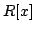

Usage
fftCutoff
Signature
fftCutoff: MachineInteger
Returns
Returnssuch that the FFT multiplication is used in  for polynomials of degree greater than or equal to
Remarks
If this constant is, then FFT multiplication is not used at all in .